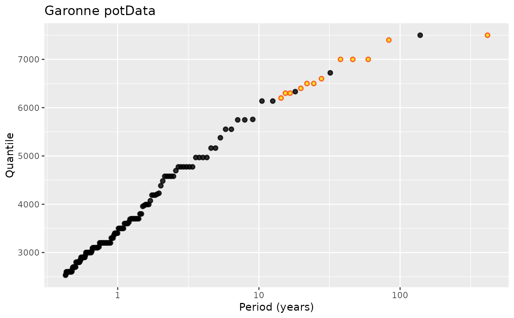
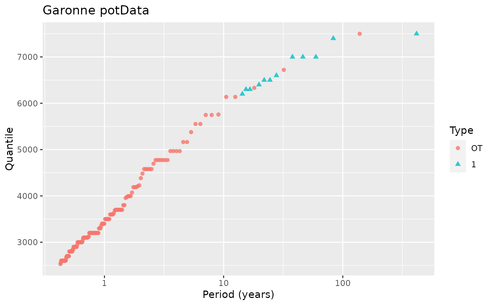
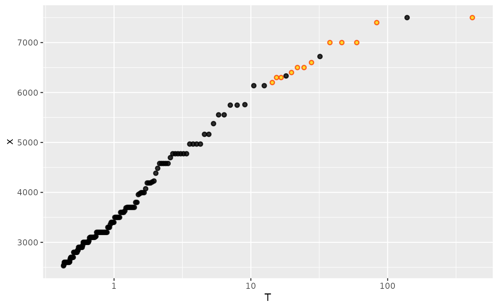
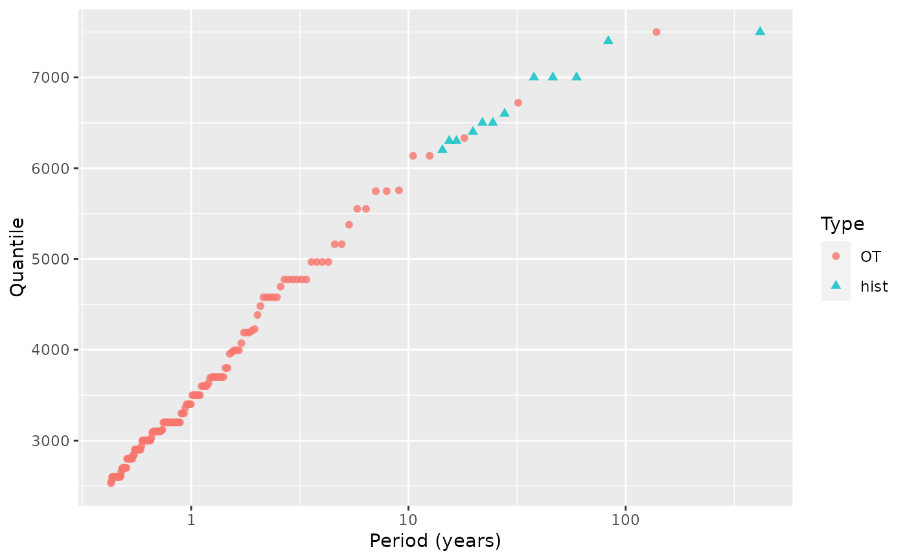

Build ggplot graphics for a potData object.
Arguments
- object
A
potDataobject.- type
Type of plot wanted, either a return-level plot or a time plot with the events shown as vertical segments. Not implemented yet.
- aes
Logical. If
TRUEthe colour, fill and shape of the points are used within the aesthetic functionaeswo they are registred to appear in legends.- xVar
Used when
typeis"RLplot". The variable to map the absissa \(x\) in the return level plot. WhenxVaris"T"the plotting positions are computed as explained in Renext Computing Details. ForxVar = "p"a further step is required to probability of exceedance \(p\) in reference with a given block duration.- group
Character with value in
"block"or"source". In the first case the color and the shape of the points depend on the block. In the second case the color and the shape depend on the type or source of the block:"OT","MAX"and"OTS". By default the value ofgroupis chosen to be"block"when the number of block is small enough and"source"otherwise.- points
Type of plotting positions to be used for a RL plot. See
RP.potData.- a
Parameter to used in
ppointswhenpointsis"p". SeeRP.potData.- blockDuration
A block duration used to find the plotting positions when
xVaris"p".- ...
Other arguments passed to
geom_point.
Note
The user might have change the colour and the shape of the
points by using scale_colour_manual and
scale_shape_manual.
See also
potData, scale_manual.
Examples
pdat <- as.potData(Garonne)
autoplot(pdat) + ggtitle("Garonne potData")

g <- autoplot(pdat, aes = TRUE) + ggtitle("Garonne potData")
g

g <- g + scale_colour_manual(values = c("firebrick", "SpringGreen")) +
scale_shape_manual(values = c(21, 22))
## use autolayer
ggplot() + autolayer(pdat) + scale_x_log10() + theme_gray()

## Change the label of the historical block
pdat <- potData(data = Garonne$OTdata$Flow, effDuration = 65,
MAX.data = list("hist" = Garonne$MAXdata$Flow),
MAX.effDuration = 143)
autoplot(pdat, aes = TRUE)
